-
Jobs Functionality
2:40:39 pm / 00:06:44:675 Pass
Jobs Functionality
04.15.2024 2:40:39 pm 04.15.2024 2:47:24 pm 00:06:44:675 · #test-id=1As a user I want to explore Jobs section on Linkedin So that I can find opportunities that match my skils and interests.PassViewing Saved JobPassViewing Saved JobGiven User is on Jobs pageJobsStepDefinition.JobsTest2.takeScreendown(io.cucumber.java.Scenario)Viewing Saved Job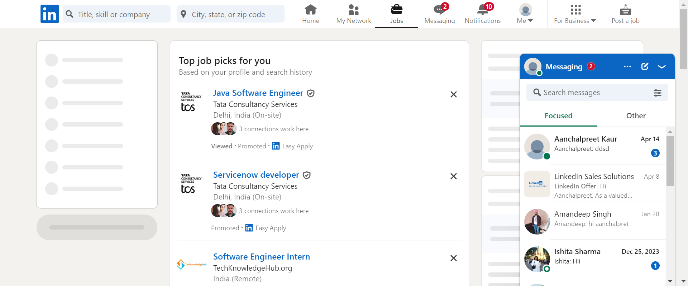When User enters "Pilot" in the first search barJobsStepDefinition.JobsTest2.takeScreendown(io.cucumber.java.Scenario)Viewing Saved Job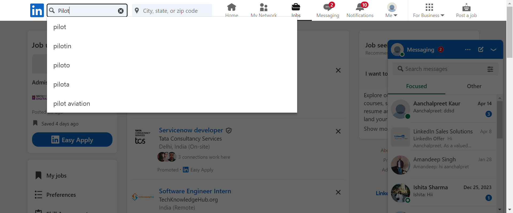And User enters "Delhi" in the second search barJobsStepDefinition.JobsTest2.takeScreendown(io.cucumber.java.Scenario)Viewing Saved Job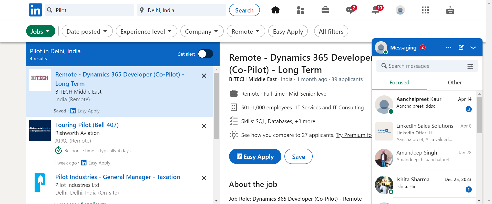And User save a job from search resultsJobsStepDefinition.JobsTest2.takeScreendown(io.cucumber.java.Scenario)Viewing Saved JobThen User should be able to view that saved Job in My JobsJobsStepDefinition.JobsTest2.takeScreendown(io.cucumber.java.Scenario)Viewing Saved Job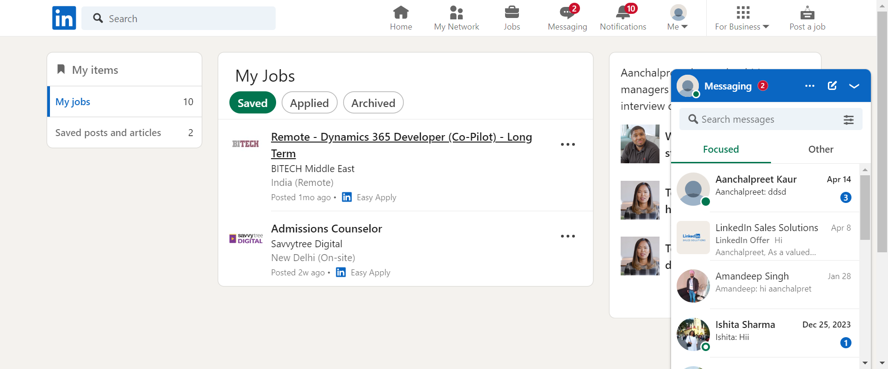PassViewing Saved JobGiven User is on Jobs pageJobsStepDefinition.JobsTest2.takeScreendown(io.cucumber.java.Scenario)Viewing Saved Job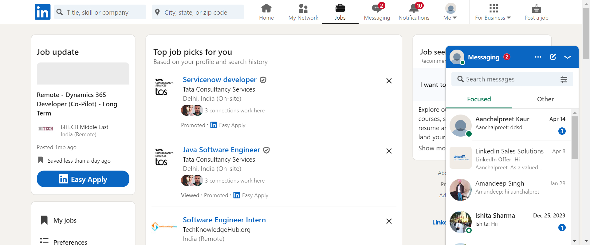When User enters "Consultant" in the first search barJobsStepDefinition.JobsTest2.takeScreendown(io.cucumber.java.Scenario)Viewing Saved Job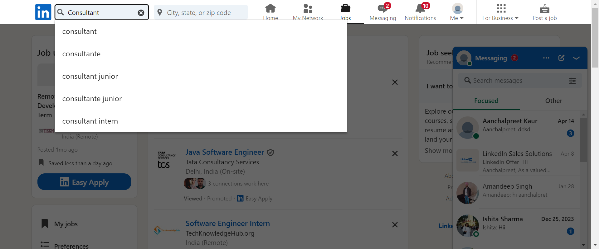And User enters "Bangalore" in the second search barJobsStepDefinition.JobsTest2.takeScreendown(io.cucumber.java.Scenario)Viewing Saved Job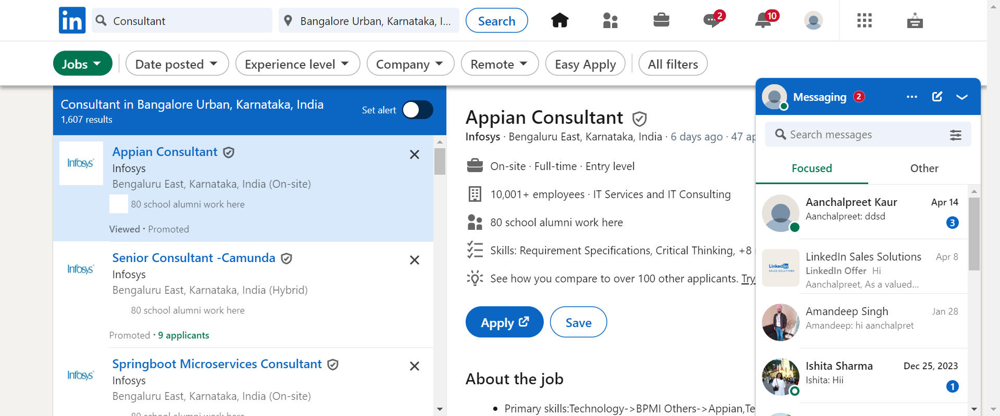And User save a job from search resultsJobsStepDefinition.JobsTest2.takeScreendown(io.cucumber.java.Scenario)Viewing Saved JobThen User should be able to view that saved Job in My JobsJobsStepDefinition.JobsTest2.takeScreendown(io.cucumber.java.Scenario)Viewing Saved Job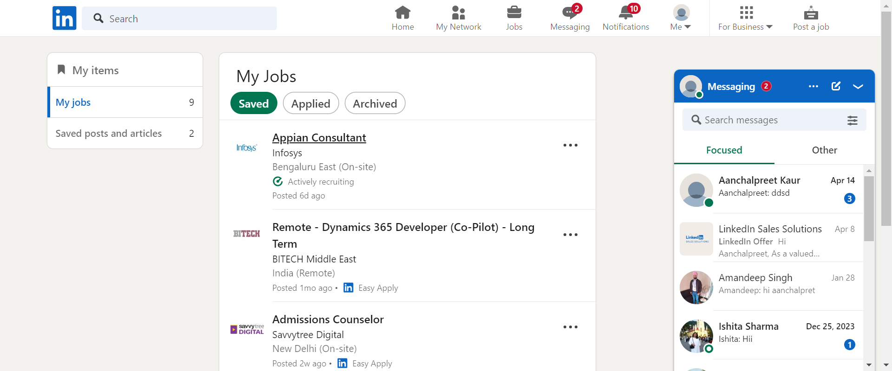PassSending Job Feedback to LinkedinGiven User is on Jobs pageJobsStepDefinition.JobsTest2.takeScreendown(io.cucumber.java.Scenario)Sending Job Feedback to Linkedin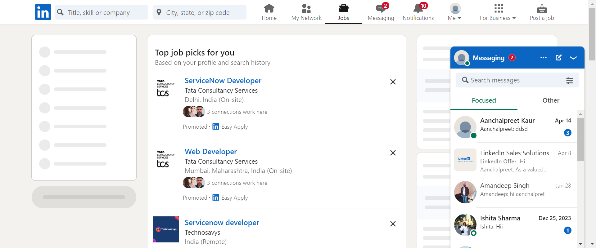When User perform a job searchJobsStepDefinition.JobsTest2.takeScreendown(io.cucumber.java.Scenario)Sending Job Feedback to Linkedin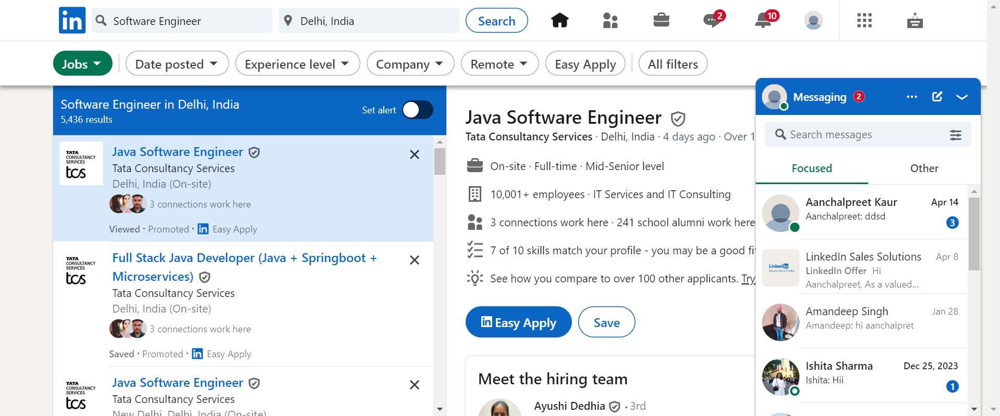And User apply Company and Easy Apply filterJobsStepDefinition.JobsTest2.takeScreendown(io.cucumber.java.Scenario)Sending Job Feedback to Linkedin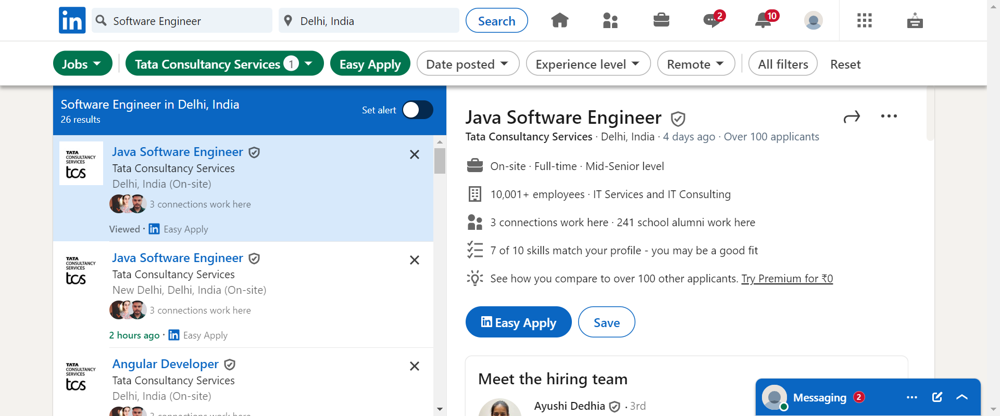And User clicks on Send Feedback option of JobJobsStepDefinition.JobsTest2.takeScreendown(io.cucumber.java.Scenario)Sending Job Feedback to Linkedin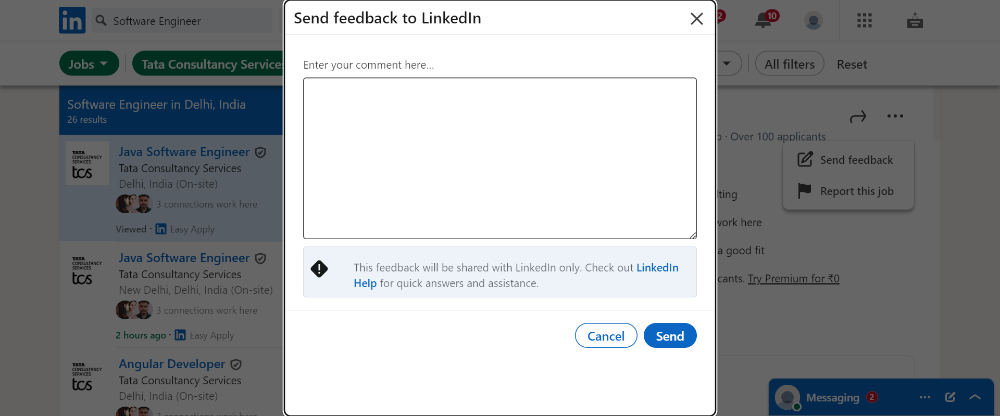And User clicks on send button after writing feedbackJobsStepDefinition.JobsTest2.takeScreendown(io.cucumber.java.Scenario)Sending Job Feedback to LinkedinThen a confirmation message should be displayedJobsStepDefinition.JobsTest2.takeScreendown(io.cucumber.java.Scenario)Sending Job Feedback to Linkedin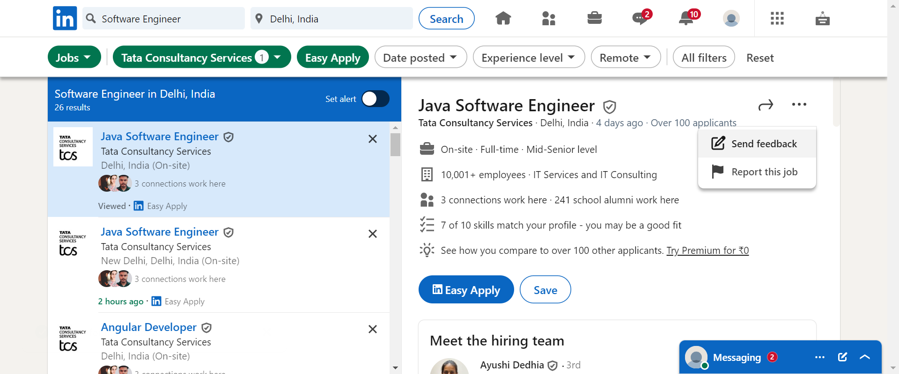PassSharing Job Preferences with recruitersGiven User is on Jobs pageJobsStepDefinition.JobsTest2.takeScreendown(io.cucumber.java.Scenario)Sharing Job Preferences with recruiters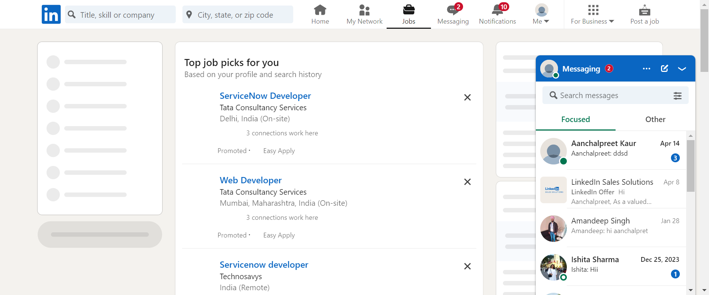When User clicks on PreferencesJobsStepDefinition.JobsTest2.takeScreendown(io.cucumber.java.Scenario)Sharing Job Preferences with recruiters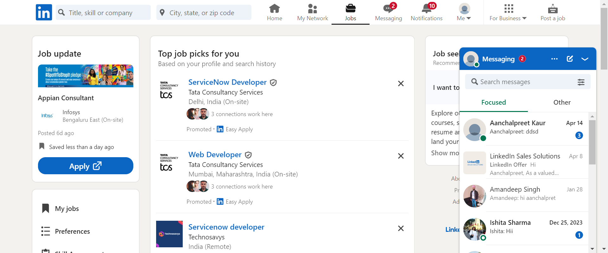And User clicks on Open To workJobsStepDefinition.JobsTest2.takeScreendown(io.cucumber.java.Scenario)Sharing Job Preferences with recruiters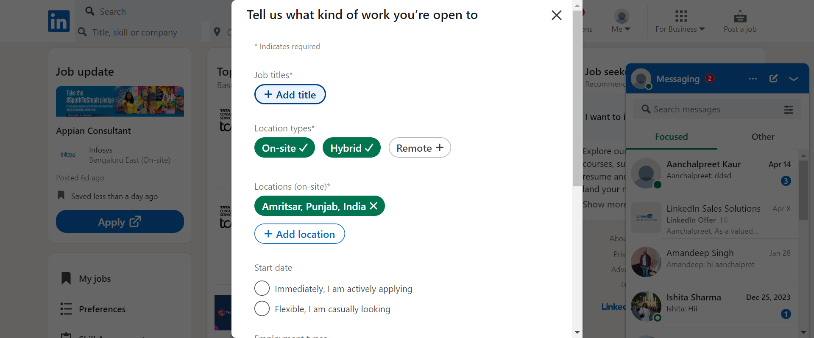And User enters titleTitle Software Engineer Analyst JobsStepDefinition.JobsTest2.takeScreendown(io.cucumber.java.Scenario)Sharing Job Preferences with recruiters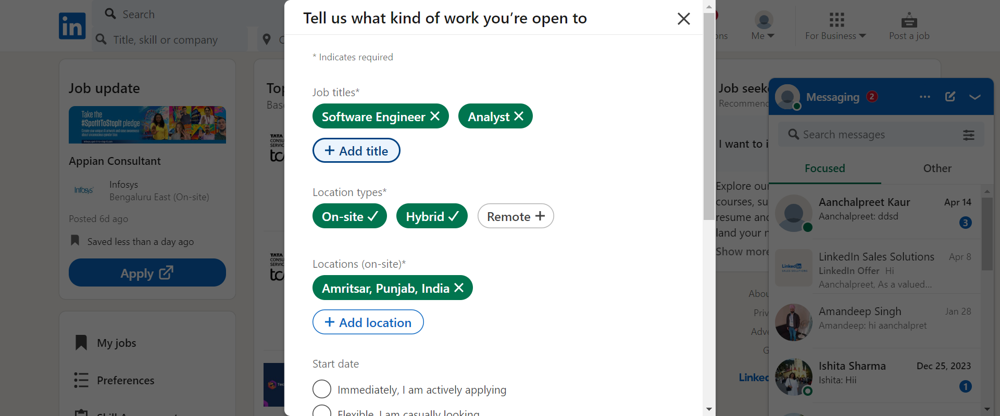And User selects Location typesJobsStepDefinition.JobsTest2.takeScreendown(io.cucumber.java.Scenario)Sharing Job Preferences with recruiters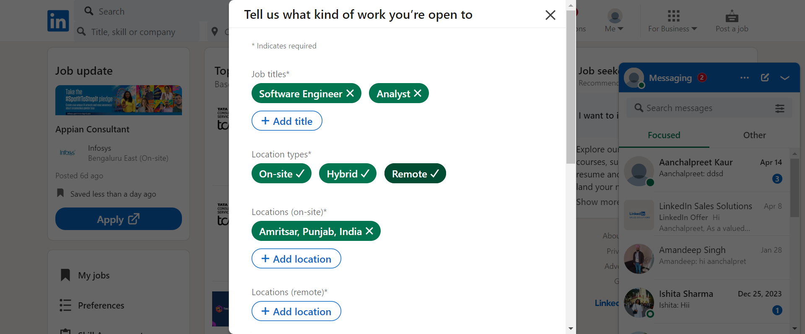And User enters LocationsOnsite Remote Delhi Amritsar Bangalore Chandigarh JobsStepDefinition.JobsTest2.takeScreendown(io.cucumber.java.Scenario)Sharing Job Preferences with recruiters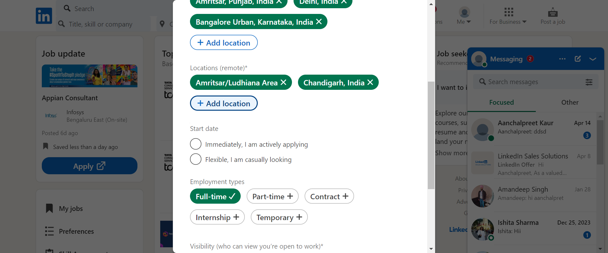And User selects Employment typesJobsStepDefinition.JobsTest2.takeScreendown(io.cucumber.java.Scenario)Sharing Job Preferences with recruiters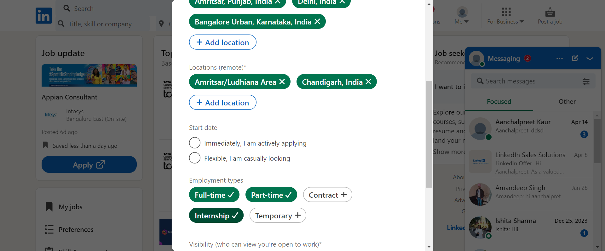And User sets the visibilityJobsStepDefinition.JobsTest2.takeScreendown(io.cucumber.java.Scenario)Sharing Job Preferences with recruiters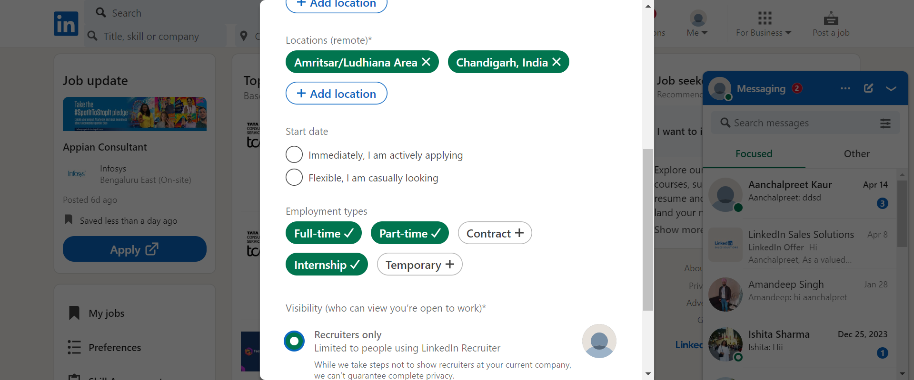Then User should be able to save the preferencesJobsStepDefinition.JobsTest2.takeScreendown(io.cucumber.java.Scenario)Sharing Job Preferences with recruiters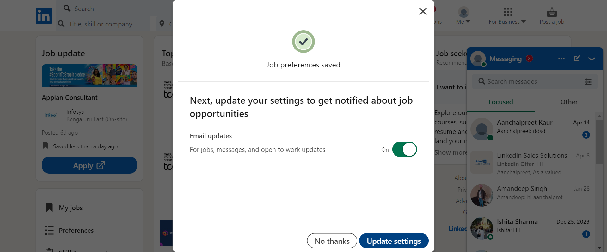PassPracticing Interview AnswersGiven User is on Jobs pageJobsStepDefinition.JobsTest2.takeScreendown(io.cucumber.java.Scenario)Practicing Interview Answers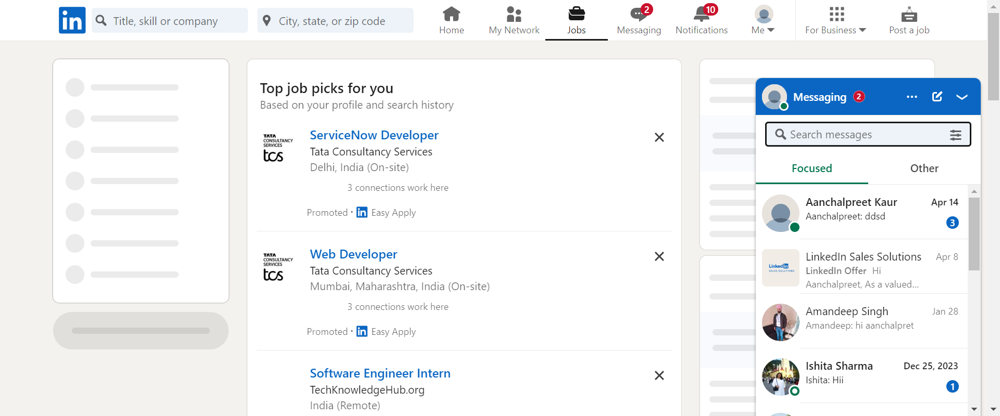When User clicks on Interview Prep in the left-hand menuJobsStepDefinition.JobsTest2.takeScreendown(io.cucumber.java.Scenario)Practicing Interview Answers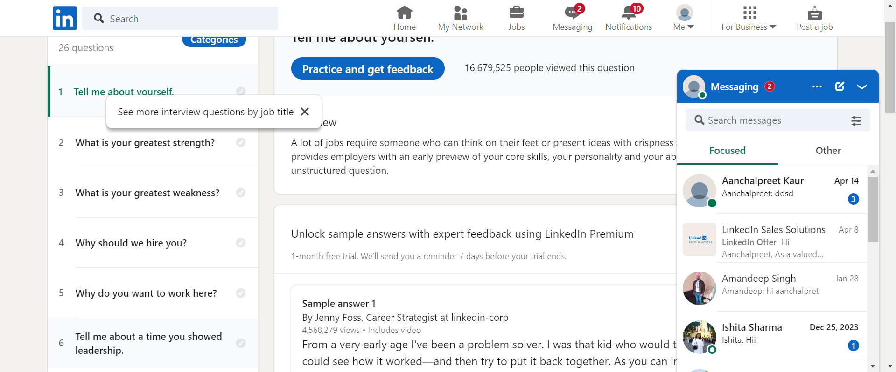And User selects a specific interview question from the listJobsStepDefinition.JobsTest2.takeScreendown(io.cucumber.java.Scenario)Practicing Interview Answers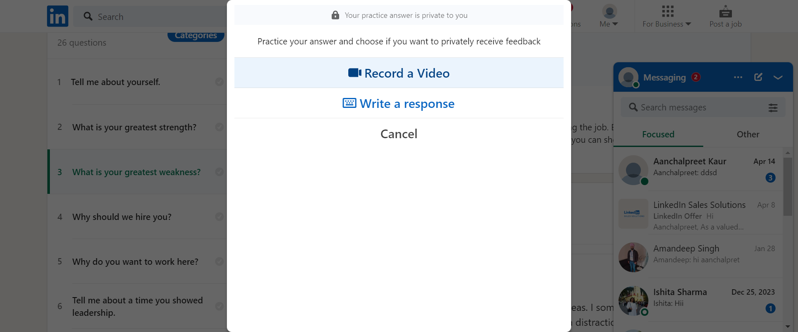And User choose to write a text response for practiceJobsStepDefinition.JobsTest2.takeScreendown(io.cucumber.java.Scenario)Practicing Interview Answers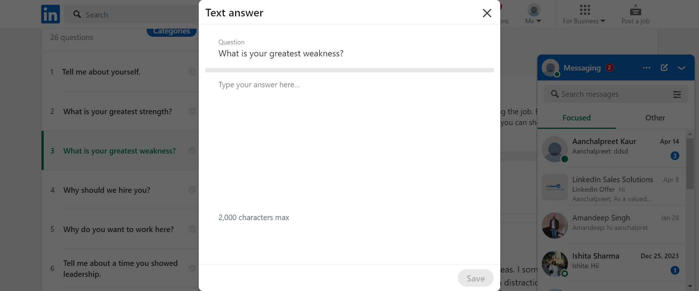And User enters the following answerYou should hire me because I have the qualifications, experience, and attitude to contribute to your company. JobsStepDefinition.JobsTest2.takeScreendown(io.cucumber.java.Scenario)Practicing Interview Answers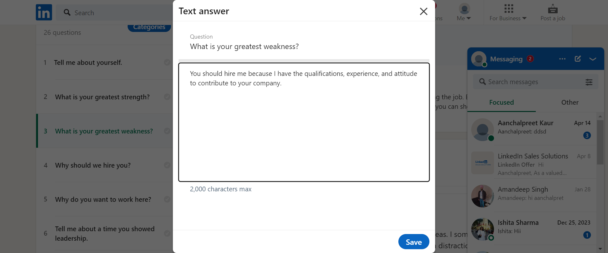And User save the the answerJobsStepDefinition.JobsTest2.takeScreendown(io.cucumber.java.Scenario)Practicing Interview Answers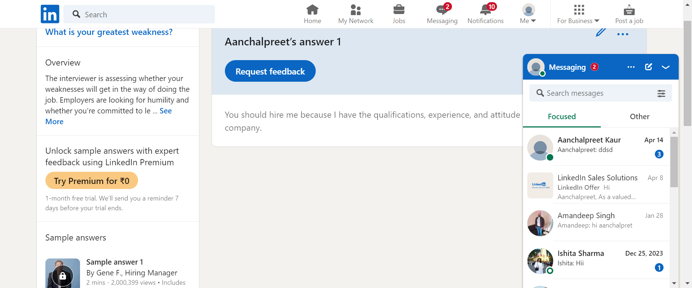Then User should be able to view saved answerJobsStepDefinition.JobsTest2.takeScreendown(io.cucumber.java.Scenario)Practicing Interview Answers
-
@scenario1
2 tests
@scenario1
2 passedStatus Timestamp TestName Pass 14:40:39 pm Viewing Saved Job Jobs Functionality.Viewing Saved JobPass 14:41:42 pm Viewing Saved Job Jobs Functionality.Viewing Saved Job -
@scenario4
1 tests
@scenario4
1 passedStatus Timestamp TestName Pass 14:46:25 pm Practicing Interview Answers Jobs Functionality.Practicing Interview Answers -
@Jobs
5 tests
@Jobs
5 passedStatus Timestamp TestName Pass 14:40:39 pm Viewing Saved Job Jobs Functionality.Viewing Saved JobPass 14:41:42 pm Viewing Saved Job Jobs Functionality.Viewing Saved JobPass 14:42:59 pm Sending Job Feedback to Linkedin Jobs Functionality.Sending Job Feedback to LinkedinPass 14:44:42 pm Sharing Job Preferences with recruiters Jobs Functionality.Sharing Job Preferences with recruitersPass 14:46:25 pm Practicing Interview Answers Jobs Functionality.Practicing Interview Answers -
@scenario3
1 tests
@scenario3
1 passedStatus Timestamp TestName Pass 14:44:42 pm Sharing Job Preferences with recruiters Jobs Functionality.Sharing Job Preferences with recruiters -
@scenario2
1 tests
@scenario2
1 passedStatus Timestamp TestName Pass 14:42:59 pm Sending Job Feedback to Linkedin Jobs Functionality.Sending Job Feedback to Linkedin
Started
Apr 15, 2024 02:40:38 pm
Ended
Apr 15, 2024 02:47:24 pm
Features Passed
1
Features Failed
0
Features
Scenarios
Steps
Timeline
Tags
| Name | Passed | Failed | Skipped | Others | Passed % |
|---|---|---|---|---|---|
| @scenario1 | 2 | 0 | 0 | 0 | 100% |
| @scenario4 | 1 | 0 | 0 | 0 | 100% |
| @Jobs | 5 | 0 | 0 | 0 | 100% |
| @scenario3 | 1 | 0 | 0 | 0 | 100% |
| @scenario2 | 1 | 0 | 0 | 0 | 100% |
System/Environment
| Name | Value |
|---|---|
| AppName | Eclipse |
| user | AANKAUR |
| build | windows |